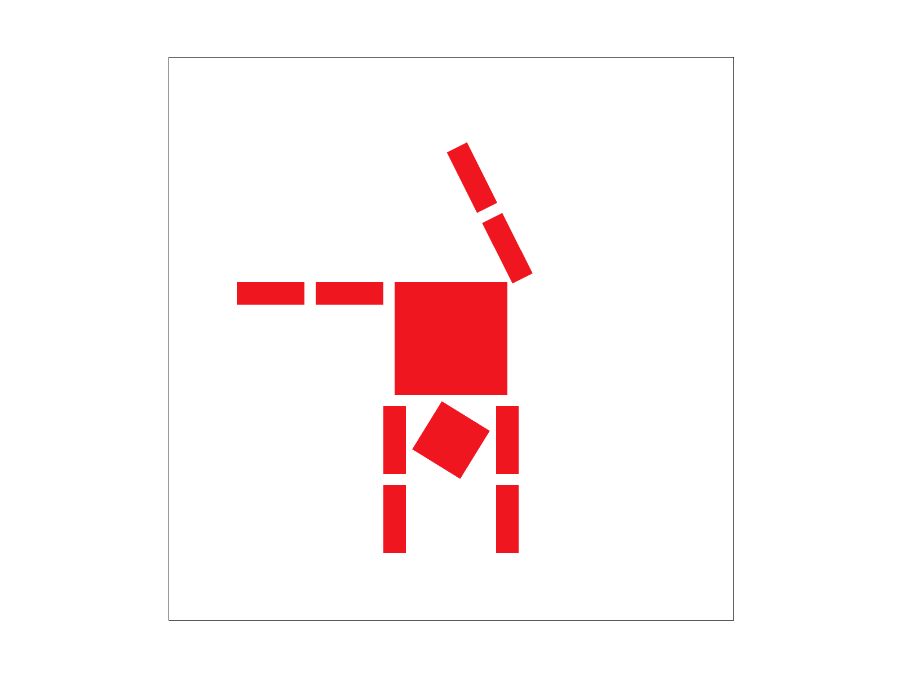
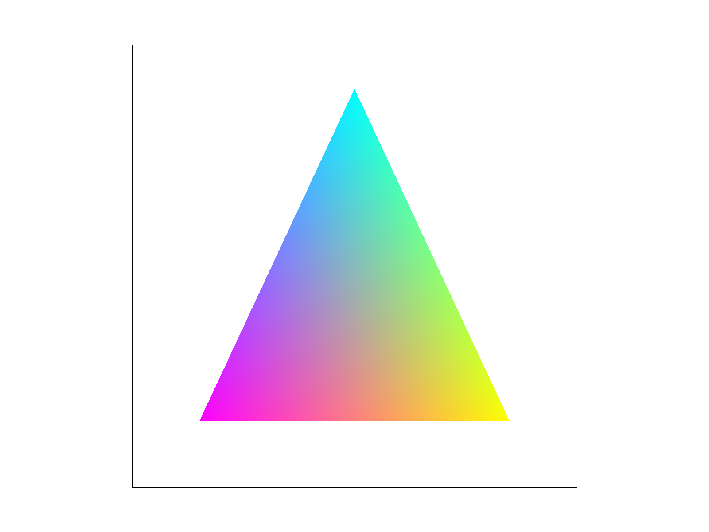
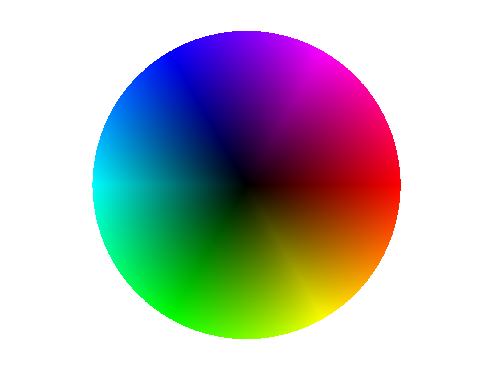
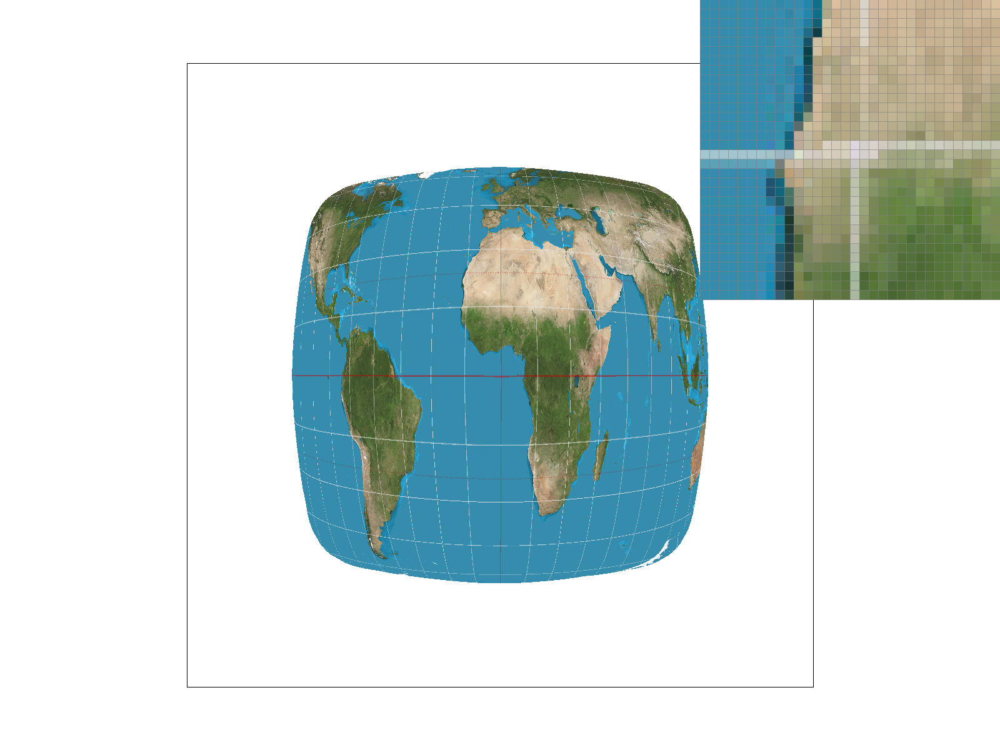
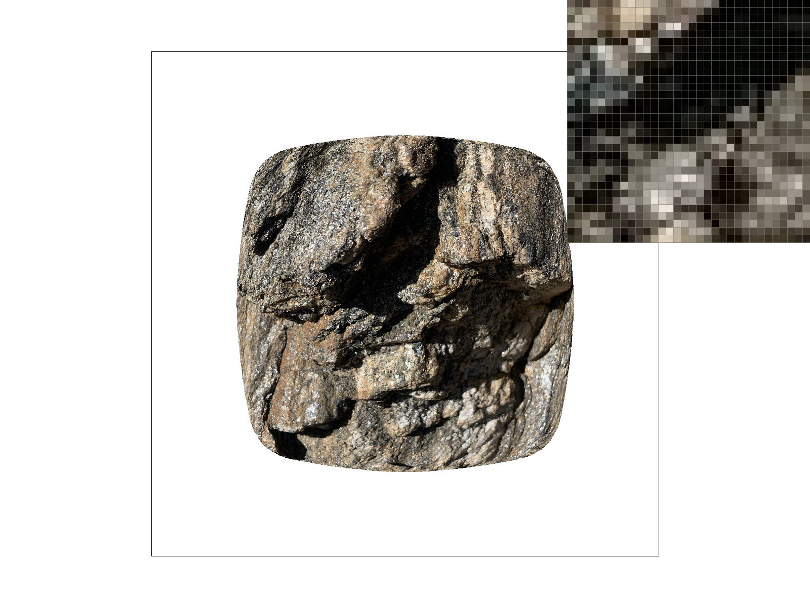
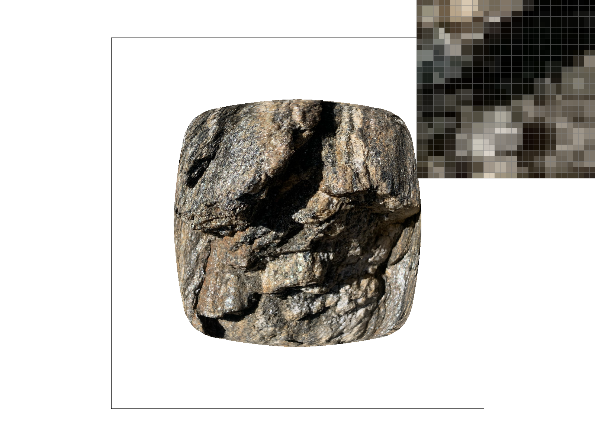
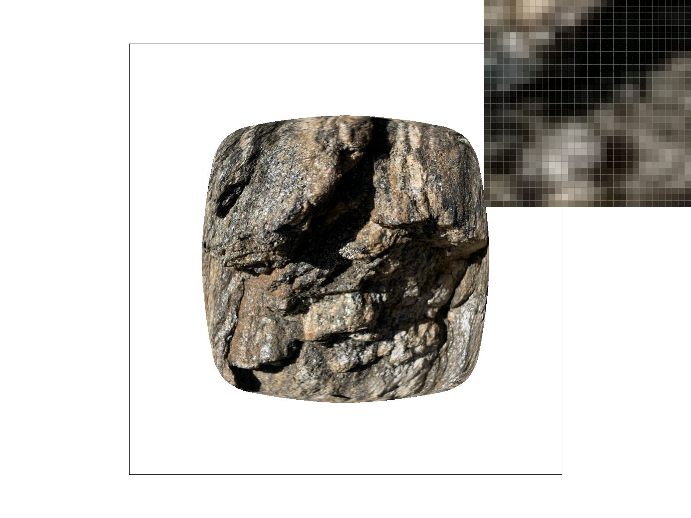
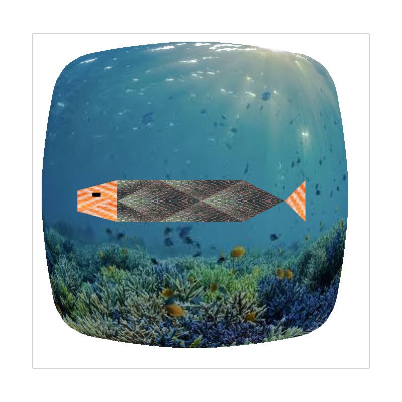

CS184/284A Fall 2026 Homework 1 Write-Up
Link to webpage: https://cal-cs184-student.github.io/hw1-sv-writeup/
Link to GitHub repository: https://github.com/cal-cs184-student/hw1-sv-writeup
Overview
In this homework, I worked to implement several rendering techniques that included rasterization, sampling, and texture mapping. While listening to the lectures was helpful, I thought that being able to implement the functions themselves was extremely valuable in learning the concepts. The concept that I think I learned the most via manual implementation was barycentric interpolation, as I could see how significant its impact was on rendering the colors and textures on images. While implementing the functions I also gained a stronger understanding of the underlying foundations in linear algebra and matrix/vector operations, which was helpful as well.Task 1: Drawing Single-Color Triangles
To rasterize a triangle, fill every sample point that lies inside the triangle defined by the vertices \((x_0,y_0)\), \((x_1,y_1)\), and \((x_2,y_2)\) with the given color \(C\). For each sample point \((p_x,p_y)\), we calculate the signed 2D cross product between each edge of the triangle and the vector from the edge's starting vertex to the sample point. For example: $$ (x_1-x_0)(p_y-y_0)-(y_1-y_0)(p_x-x_0) $$ If all three cross products have the same sign in that they are either all positive or all negative (including zero) then the sample point lies inside or on the boundary of the triangle, so we fill the corresponding pixel. Rather than taking a sample pixel from the dimensions of the entire window, I only sample from the minimum to the maximum x and y values given in the parameters. This is done with the max() and min() functions, as well asfloor() and ceil() functions to turn the floats into ints.

Task 2: Antialiasing by Supersampling
I first began by repurposing the algorithm from the originalrasterize_triangle method, specifically iterating through the triangle's bounding box and using cross products to determine whether a sample lies inside the triangle.
To implement supersampling, I subdivided each pixel into multiple samples, with the number of samples determined by the sample_rate member variable.
For each pixel, I iterate through a \(\sqrt{\mathrm{sample\_rate}}\times\sqrt{\mathrm{sample\_rate}}\) grid of samples. The position of each sample is calculated using the center of each subpixel, rather than using the center of the entire pixel.
I then use the cross products to determine whether each sample lies inside the triangle. If it does, I store the triangle's color in the corresponding position in sample_buffer.
The sample index is calculated using the pixel's (x, y) coordinates and the sample's (sx, sy) coordinates within that pixel.
The sample_buffer is the main data structure I use for supersampling. Instead of storing one color per pixel, it stores \(\mathrm{width}\times\mathrm{height}\times\mathrm{sample\_rate}\) colors, allowing each pixel to have multiple samples.
I modified the buffer initialization and resizing in set_sample_rate(), and set_framebuffer_target() to account for the additional samples.
After all the triangles have been rasterized, resolve_to_framebuffer() converts the supersampled image back into the normal framebuffer.
For each pixel, I iterate through all of its samples, add their red, green, and blue components separately, and divide each component by sample_rate to calculate the average color.
This averaged color is then written to the framebuffer. By using supersampling for each pixel, I am antialiasing as it smooths the jagged edges created when pixels are either considered inside or outside a triangle.
Supersampling creates a gradient that softens the edges and strengthens the appearance of diagonal lines in triangles.

|

|

|
Task 3: Transforms
I updated robot.svg so that cubeman is in the midst of doing a cartwheel. To do this, I changed the translation of his head so that he is below the torso instead of above and the arms and legs are effectively switched. I then adjusted the translation of the arms so that they were further apart. Finally, I translated and rotated the right leg so that it would look like it was swinging in a cartwheel.

Task 4: Barycentric coordinates
Barycentric coordinates are a format of coordinates where instead of an origin being (0,0) in an x-y plane, the three points of the triangle are designated with \((1,0,0)\), \((0,1,0)\), and \((0,0,1)\), and other point can be expressed in the range of (0,1) with weighted values that add up to 1. As such, the center (barycenter) of the triangle is \((1/3,1/3,1/3)\). This is helpful when mapping colors or textures that are correlated with the triangle’s vertices, in which barycentric coordinates can designate how much each vertex’s value is weighted and result in a smooth transition between different mappings. For example, the triangle below sets the three vertices as the different colors of blue, purple, and yellow. Every other point within the triangle is colored based off the barycentric coordinates’ corresponding values about the vertices’ colors.|
 |
|
 |
Task 5: "Pixel sampling" for texture mapping
I first began by repurposing the algorithm from the originalrasterize_triangle method, specifically iterating through the triangle's bounding box and using cross products to determine whether a sample lies inside the triangle. I then use these cross products to calculate the barycentric weights of the sample point, which are used to interpolate the u and v texture coordinates from the three vertices. These coordinates determine the location in the texture from which to sample a color.
For nearest-neighbor sampling, I use floor() to determine the texel corresponding to the interpolated (u, v) coordinate and return its color using get_texel().
For bilinear sampling, I used the four texels surrounding the (u, v) coordinate. I used the fractional parts of the texture coordinates to weight the colors based on their distance from the sample point. First, I interpolated between the two pairs of texels horizontally and then interpolate between those results vertically.
|
 |
|
|
|
|
Task 6: "Level Sampling" with mipmaps for texture mapping
Level sampling is used to determine which mipmap level should be sampled from, based on how much the texture coordinates change across a screen pixel. AtL_ZERO, the mipmap level is set to 0, so the original full-resolution texture is sampled. At L_NEAREST, the mipmap level is rounded to the nearest available level. At L_LINEAR, the two closest mipmap levels are selected using floor() and ceil(), and their sampled colors are interpolated using the fractional part of the level.
To determine the appropriate nonzero mipmap level, I calculate the texture coordinates at the current pixel and at neighboring screen positions one pixel to the right and one pixel below. These correspond to the UV coordinates \((u+1,v)\) and \((u,v+1)\). I use the same barycentric interpolation used to calculate the original (u, v) coordinates. These neighboring coordinates are stored as p_dx_uv and p_dy_uv and are passed to get_level().
In get_level(), I first calculate the UV differences between the neighboring samples and the original texture coordinate: dx = p_dx_uv - p_uv and dy = p_dy_uv - p_uv. I then scale the differences by the texture width and height to convert them from normalized texture coordinates into texel coordinates. Finally, I use the larger of the two vector magnitudes to determine the mipmap level:
|
 |
|
|
 |
 |
Antialiasing improves as the number of samples per pixel increases. This is because more sample points are considered within each pixel, producing smoother edges and reducing jagged pixels. However, as a result a larger number of samples per pixel will also cause the speed to decrease and memory usage to increase.
Speed and memory usage are improved when using nearest pixel sampling rather than bilinear, because nearest sampling retrieves one texel, while bilinear sampling uses four texels and performs additional interpolation. But similar to increasing the number of samples per pixel, using bilinear pixel sampling creates a smoother appearance in texture mappings due to more pixels being considered.
Similarly, speed increases when nearest level and zero level sampling is used, while linear level sampling requires additional operations because it samples and interpolates between two mipmap levels. Memory usage remains the same across all three level sampling techniques since it uses the same mipmap storage.
(Optional) Task 7: Extra Credit - Draw Something Creative!

I created this image first by repurposing the svg used in test1 of texmap, replacing the map with an underwater background and using scale and translate transformations to fit the background accordingly. I then used two different images of fish scales to create my fish, one to use as texture mapping for the body and one to use as texture mapping for the head and tail. Finally, I added a black polygon and translated it accordingly for the fish eye. This was done manually in VS Code, I didn’t write a code file to generate it or use Illustrator.